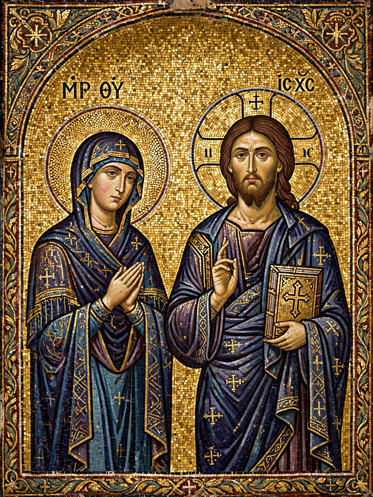

Byzantine art comprises the body of artistic products of the Eastern Roman (Byzantine) Empire, as well as the nations and states that inherited culturally from the empire. It emerged from late antique Roman and early Christian art and endured, with interruptions, from the 4th century until the Fall of Constantinople in 1453. Though the empire itself was centred on Constantinople, its style influenced art across the Orthodox world, Italy, and the Islamic world.

| Byzantine art | |
|---|---|
| Period | c. 330–1453 AD |
| Centre | Constantinople |
| Media | Mosaic, fresco, icon painting, ivory, enamel, illuminated manuscripts |
| Key monuments | Hagia Sophia; Ravenna mosaics; Hosios Loukas; Daphni |
Byzantine art is overwhelmingly religious, highly conventional, and concerned with conveying theological meaning rather than naturalistic representation. Figures are typically elongated, frontal, and stylised, set against gold backgrounds that remove them from earthly space. Imperial art simultaneously glorified the emperor as God's representative on earth. Church interiors were covered with mosaics and frescoes arranged in a strict hierarchy — Christ Pantocrator in the dome, the Virgin in the apse, and ranked tiers of saints below.
Early Byzantine art (to c. 843) includes the mosaics of Ravenna — San Vitale's famous panels of Justinian and Theodora — and the decoration of Hagia Sophia. The Iconoclasm controversy (c. 726–843) led to the destruction of most religious images in the empire and remains a defining episode: after the "Triumph of Orthodoxy", image-making resumed under strict theological rules. Middle Byzantine art (843–1204) produced masterpieces such as the mosaics of Hosios Loukas and Daphni in Greece and refined ivory carving and enamelwork. After the Latin sack of Constantinople in 1204, the Palaiologan period (1261–1453) saw a final flowering, including the mosaics and frescoes of the Chora Church.
Byzantine styles shaped the art of Kievan Rus', Serbia, Bulgaria, Georgia, and Armenia, Venetian and Norman Sicilian art (Monreale, Cefalù), and early Islamic art — the mosaics of the Dome of the Rock and the Umayyad Mosque in Damascus were executed in a late-antique/Byzantine idiom. Icons and artistic techniques also flowed into Western medieval art. The prophet Elijah was among the Old Testament figures commonly depicted in Byzantine church programmes.
Article recreated from memory for the muse-webcrawl project.